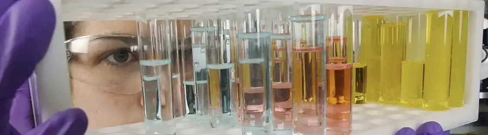
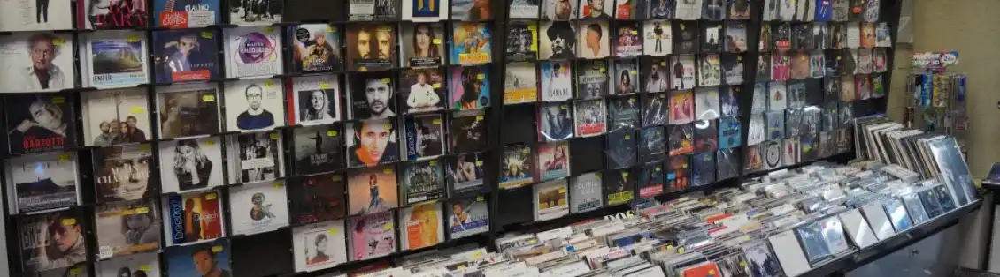
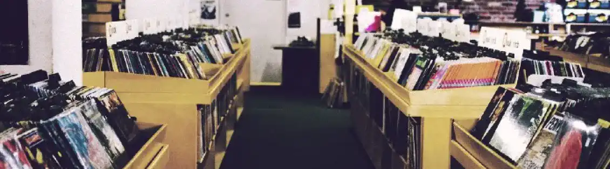

MASSILIA Le Marseille d'hier
Les dégâts sur la planète
Les adolescents du monde entier ont largement intégré les nouvelles technologies dans leur vie courante. Cet engouement s’est rapidement répandu dans la Terre entière, bien qu’il semble encore plus important dans les pays asiatiques comme en témoigne le nombre d’articles scientifiques portant sur ce sujet et provenant des pays comme le Japon et la Corée.

Les anciennes générations à l’époque effectuaient des recherches dans des encyclopédies lorsqu’ils avaient besoin d’informations. On peut prendre comme exemple comment la technologie a-t-elle modifié la façon d’écouter de la musique. Chez moi par exemple près de Marseille, existait un magasin de musique dans les années 90.

Ce magasin-là, je trouve qu’il a énormément de style, c’est-à-dire je trouve que le fait de se déplacer pour acheter un cd ou disque vinyle avait du caractère. L’achat était un investissement du point de vue du client. De plus l’engouement que créais ce genre de magasin était propre de l’époque. Tout le monde se rendais dans la boutique pour écouter les cd via les casques mis à disposition.

Aujourd’hui depuis un peu moins de 10ans les plateformes de streaming on fait fermer ces magasins. La puissance de ces géants du streaming ont conquis presque tout le monde. Désormais seulement un abonnement permet d’écouter tous les albums n’importe où sur la planète.Autre que le bouleversement chez les clients de musique, ces plateformes on créer un déséquilibre au sein de la SACEM, c’est-à-dire les revenus grâce au droit de chaque artiste. Je trouve que la technologie à bouleverser la façon d’écouter la musique, et j’aurais voulu vivre durant les années 90s, car je trouve cette période chaleureuse. Mais autre que le côté négatif, cette la technologie possède aussi des avantages.
La technologie à avantagé de nombreuse personne. Désormais chaque artiste peut exprimer son travail via les réseaux sociaux
L'avancée technologique